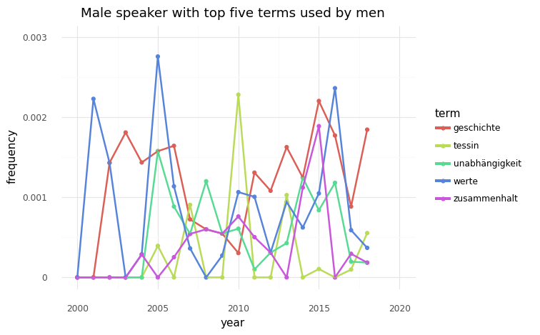
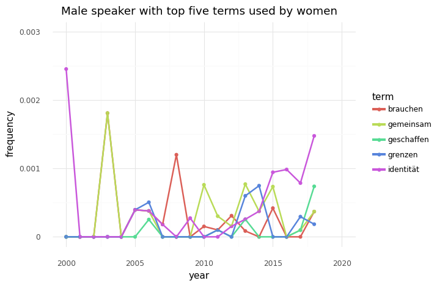

#Import modules
import textacy
import spacy
import scattertext as st
import pandas as pd
from pathlib import Path
from plotnine import *
#change language to german
de = textacy.load_spacy_lang("de_core_news_sm")#make Python understand gender
m = "male"
f = "female"
Geschlecht = [m,f]#read dataset (male) from csv file
f_csv = '../KED2022/materials/data/dataset_speeches_m.csv'
df = pd.read_csv(f_csv)
# filter out non-german texts or very short texts
df_sub = df[(df['Sprache'] == 'de') & (df['text'].str.len() > 10)]
# make new column containing all relevant metadata (showing in plot later on)
df_sub['descripton'] = df_sub[['Redner', 'Partei', 'Jahr']].astype(str).agg(', '.join, axis=1)
# sneak peek of dataset
df_sub.head()| Jahr | Status | Vollständigkeit | Redner | Geschlecht | Funktion | Partei | Partei-Original | Typ | Bemerkung | Sprache | Originalsprache | Ort | Titel | Anrede | Originaltext | Quelle | text | descripton | |
|---|---|---|---|---|---|---|---|---|---|---|---|---|---|---|---|---|---|---|---|
| 0 | 2018 | done | vollständig | Alain Berset | m | BP | SP | SP | BP-Rede | NaN | de | NaN | NaN | NaN | Sehr geehrte Damen und Herren | NaN | https://www.admin.ch/gov/de/start/dokumentatio... | Wir leben in der Schweiz in Frieden und Wohlst... | Alain Berset, SP, 2018 |
| 3 | 2018 | done | vollständig | Guy Parmelin | m | BR | SVP | SVP | Lokal | NaN | de | NaN | NaN | «Armbrust und Hellebarde» | Sehr geehrte Eidgenossen, Meine Damen und Herren | NaN | https://www.admin.ch/gov/de/start/dokumentatio... | Eine 1.-August-Rede ist eine der heikelsten rh... | Guy Parmelin, SVP, 2018 |
| 4 | 2018 | done | vollständig | Ignazio Cassis | m | BR | FDP | FDP | Lokal | NaN | de | NaN | Rorschach | Die Italianità hat ihre Wurzeln in Rorschach | Gueten Obig mitenand! | NaN | https://www.admin.ch/gov/de/start/dokumentatio... | Und danke für diese freundliche Einladung! Ich... | Ignazio Cassis, FDP, 2018 |
| 6 | 2017 | done | vollständig | Didier Burkhalter | m | BR | FDP | FDP | Lokal | NaN | de | fr | Aigle-Les Diablerets | „Le 1er août est un voyage à travers la Suisse... | Mesdames et Messieurs, et chers amis, | Le 1er août est un voyage. Et pour mon épouse ... | https://www.admin.ch/gov/de/start/dokumentatio... | Der 1. August ist eine Reise. Und für meine Fr... | Didier Burkhalter, FDP, 2017 |
| 7 | 2017 | done | vollständig | Guy Parmelin | m | BR | SVP | SVP | Lokal | NaN | de | NaN | Bern | «Ein Land, das stolz auf seine Traditionen ist... | Sehr geehrte Eidgenossen\nMeine Damen und Herren | NaN | https://www.admin.ch/gov/de/start/dokumentatio... | Für uns ist der 1. August mehr als ein Nationa... | Guy Parmelin, SVP, 2017 |
#create corpus for male dataset
def get_texts_from_csv(f_csv, text_column):
"""
Read dataset from a csv file and sequentially stream the rows,
including metadata.
"""
# read dataframe
df = pd.read_csv(f_csv)
# keep only documents that have text
filtered_df = df[df[text_column].notnull()]
# iterate over rows in dataframe
for idx, row in filtered_df.iterrows():
# read text and join lines (remove hard line-breaks)
text = row[text_column].replace('\n', ' ')
# use all columns as metadata, except the column with the actual text
metadata = row.to_dict()
del metadata[text_column]
yield (text, metadata)
f_csv = '../KED2022/materials/data/dataset_speeches_m.csv'
texts = get_texts_from_csv(f_csv, text_column='text')
corpus_speeches_m = textacy.Corpus(de, data=texts)# define what groups are formed and what terms should be included
# here, groups by year and words are lowercased (incl. stop words)
tokenized_docs, groups = textacy.io.unzip(
(textacy.extract.utils.terms_to_strings(textacy.extract.words(doc, filter_stops=False), by="lower"),
doc._.meta["Jahr"])
for doc in corpus_speeches_m)
# define how to count
# here relative term frequency
vectorizer = textacy.representations.vectorizers.GroupVectorizer(
tf_type='linear', # absolute term frequency
dl_type="linear", # normalized by document length
vocabulary_grps=range(1950, 2019)) # limit to years from 1950 to 2019
# create group-term-matrix with with frequency counts
grp_term_matrix = vectorizer.fit_transform(tokenized_docs, groups)
# create dataframe from matrix
df_terms = pd.DataFrame.sparse.from_spmatrix(grp_term_matrix, index=vectorizer.grps_list, columns=vectorizer.terms_list)
df_terms['year'] = df_terms.index
# change shape of dataframe
df_tidy = df_terms.melt(id_vars='year', var_name="term", value_name="frequency")
df_tidy/home/nilsos/.local/lib/python3.8/site-packages/textacy/representations/vectorizers.py:673: RuntimeWarning: divide by zero encountered in true_divide| year | term | frequency | |
|---|---|---|---|
| 0 | 1950 | 's | 0.0 |
| 1 | 1951 | 's | 0.0 |
| 2 | 1952 | 's | 0.0 |
| 3 | 1953 | 's | 0.0 |
| 4 | 1954 | 's | 0.0 |
| ... | ... | ... | ... |
| 1119175 | 2014 | − | 0.0 |
| 1119176 | 2015 | − | 0.0 |
| 1119177 | 2016 | − | 0.0 |
| 1119178 | 2017 | − | 0.0 |
| 1119179 | 2018 | − | 0.0 |
1119180 rows × 3 columns
# filter the dataset for the five most used terms in speeches read by a female speaker
terms = ["geschichte", "zusammenhalt", "tessin", "unabhängigkeit", "werte"]
df_terms = df_tidy[df_tidy['term'].isin(terms)]
# plot the relative frequency for the terms above
(ggplot(df_terms, aes(x='year', y='frequency', color='term'))
+ ggtitle('Male speaker with top five terms used by men') # give plot a name to differentiate from male plot
+ geom_point() # show individual points
+ stat_smooth(method='lowess', span=0.15, se=False) # overlay points with a smoothed line
+ ylim(0,0.003)
+ xlim(2000,2020) # change x-axis numbers to match the data
+ theme_minimal()) # make the plot look nicer/home/nilsos/.local/lib/python3.8/site-packages/plotnine/layer.py:401: PlotnineWarning: geom_point : Removed 250 rows containing missing values.
<ggplot: (8747025210257)># filter the dataset for the five most used terms in speeches read by a female speaker
terms = ["gemeinsam", "grenzen", "brauchen", "geschaffen", "identität"]
df_terms = df_tidy[df_tidy['term'].isin(terms)]
# plot the relative frequency for the terms above
(ggplot(df_terms, aes(x='year', y='frequency', color='term'))
+ ggtitle('Male speaker with top five terms used by women') # give plot a name to differentiate from male plot
+ geom_point() # show individual points
+ stat_smooth(method='lowess', span=0.15, se=False) # overlay points with a smoothed line
+ ylim(0,0.003)
+ xlim(2000,2020) # change x-axis numbers to match the data
+ theme_minimal()) # make the plot look nicer/home/nilsos/.local/lib/python3.8/site-packages/plotnine/layer.py:401: PlotnineWarning: geom_point : Removed 250 rows containing missing values.
<ggplot: (8747020953965)>